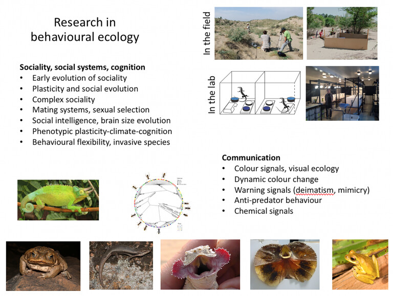

Professor of Animal Behaviour
Martin Whiting
Behavioural ecologist · School of Natural Sciences · Macquarie University

Research
My research
My fieldwork has taken me to North America, southern and eastern Africa, Hawai‘i, Sri Lanka, China, Sulawesi and Australia. My work centres on three connected areas.
Animal communication and sexual selection
My interest lies in the design and information content of animal signals, particularly colour signals, and their role in fitness. We ask what a male’s colour signal conveys about quality to a female or competitive ability to a rival male, and also investigate chemical signals and their role in sexual selection.
We study naturally selected colour signals that appear to act as deimatic displays to predators. These displays are almost completely unstudied in lizards. We have identified potential examples in independently evolved lizard clades in Africa, Asia and Australia with high ultraviolet reflectance, and investigate the factors driving their convergent evolution. We also take a comparative approach to the evolution of complex, dynamic tail waving in Australian dragons and Asian toad-headed agamas.
Cognition and brain evolution
We investigate spatial learning, behavioural flexibility, personality and whether cognitive performance is domain-specific or general. We also study cognition and personality in successful invasive species such as wall lizards and cane toads, where some individuals are more prone to dispersal than others.
Another focus is the social intelligence hypothesis for brain-size evolution. The Egernia group offers a powerful comparative system: some species live in multigenerational family groups while others are solitary, providing an alternative to the mammal and bird models traditionally used to study sociality and the brain.
Sociality and family living
We use the family-dwelling Australian Egernia–Liopholis clade to understand social plasticity and the origins of family living. We ask which social and environmental conditions drive species towards family living and cooperation, and how plastic sociality can be.
Our work on mechanisms of complex sociality examines how the social environment interacts with the brain, how neuropeptides moderate aggression and enhance pair bonds and associations, and how maternal care affects offspring social development and cognition. Ultimately, we are interested in the possibility of a general theory for the evolution of vertebrate sociality.
From the archive
Fieldwork and research


Connect